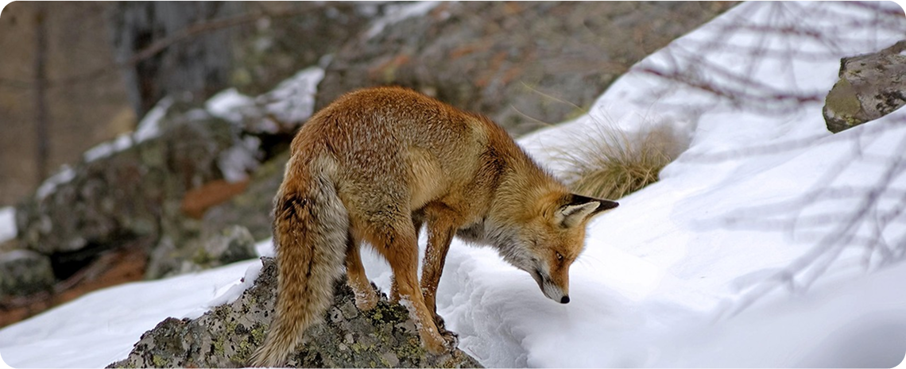
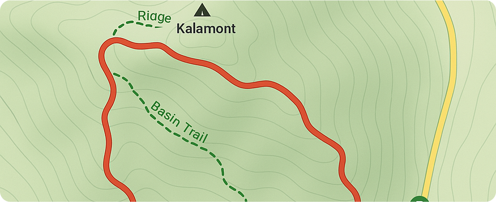

Safety & Operations
Equipped for the Extreme
Trusted by:

Current Weather Conditions
Visibility
Good Visibility
10–20 km visibility with light haze. Conditions are stable, but fog may form overnight in valleys.
Rapid Warming
-12°C (feels like -20°C)
Unseasonably warm. Snowpack softening quickly. Increased risk of wet slides and unstable footing.
Avalanche Risk
Considerable Risk
Dangerous avalanche conditions. Human-triggered slides are likely, especially on steep slopes. Avoid exposed areas.
Wilderness Safety
Before venturing into the mountains, always check the weather and avalanche forecasts. Dress in layers and bring essential gear like a map, compass, and first-aid kit. The conditions can change rapidly, so stay prepared for snow, ice, and storms, even on short hikes. Always tell someone your route and expected return time to stay safe.
While wildlife encounters are rare, always stay aware of your surroundings. Make noise to avoid surprises and never approach animals. Be cautious of unstable snow or fallen branches and hidden creeks under snowbanks.
Trail Map & Route Info
Explore Kalmont’s trail system with our updated topographic map, featuring marked routes, difficulty ratings, and key safety zones. Trails range from short scenic loops to longer backcountry routes with steep elevation and exposure. Each path is color-coded for clarity and includes waypoints for shelters, lookout points, and avalanche-prone areas.
Before heading out, check current weather and visibility conditions, and always plan your route according to your skill level. Paper maps are available at the main trailhead, and a downloadable version is linked below. Use caution in winter — snow may obscure signage and change trail difficulty.
Our Equipment & Services
Kalmont Search & Safety volunteers are equipped with radios, GPS units, avalanche beacons, and first-aid kits to support trail patrols and assist in emergencies. While not a full rescue team, we help coordinate communication, provide basic aid, and monitor high-risk areas during peak seasons.
First-Aid & Emergency Kits
Each team member is trained in basic wilderness first aid and carries supplies including trauma kits, thermal blankets, splints, and wound care essentials for on-site support before professional help arrives.
Trail Monitoring
We hike and ski marked routes to check for hazards, fallen trees, unstable snow, or signage issues. Patrols are more frequent during weekends and holidays when trails are busiest.
Communication Tools
Our volunteers carry two-way radios and GPS devices to stay connected across trail zones and relay information quickly in case of an emergency. These tools also help us monitor conditions and assist lost hikers.